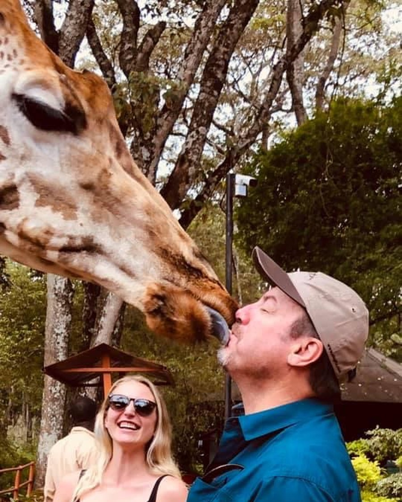
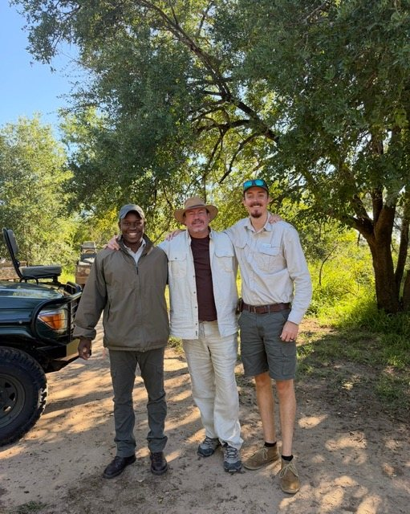
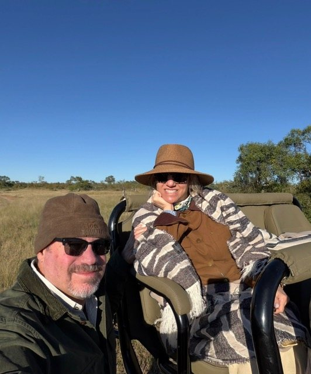

James Papagno.
“It started with a single-engine plane stuffed with surfboards, flying into Eleuthera for a one-week surf getaway in 1982. I never looked back.”
Forty-four years in, every recommendation still starts the same way it did on that first trip: someone we trust, who has actually been there. The ledger is that idea written down — place by place, with the record of how each one was vetted.
“I started with a surfboard and a one-week ticket. I’m still on the same trip. It just has a longer itinerary now.”
The story so far
Recorded from experience- 1982 · Eleuthera
- A one-week surf getaway to Eleuthera, Bahamas: a single-engine plane stuffed with surfboards. That first flight led to founding Costa Rica’s first surf travel company.
- 1989 · To sea
- Began sailing — surfing, diving and exploring every reef along the way. The love of the ocean never let go, and still hasn’t.
- 1992 · Adventure Expeditions
- Owned and operated Adventure Expeditions in Boca Raton, Florida — a wholesale company built around advisor-led journey design for eco and adventure travel.
- 2012 · Africa
- Began designing safaris to Africa, and has done so every year since.
- 2020 · Antarctica, and a sale
- Sold Adventure Expeditions after nearly three decades. Sailed the Antarctic Peninsula aboard HX’s MS Roald Amundsen as the COVID-19 shutdown closed the world’s ports.
- 2026 · The house
- James Wild & Company opens as one house with four directions — Stays, Safaris, Voyages and Gatherings — on a single ledger.
How James vets a place
The stamps in the ledgerA photograph cannot tell a traveller whether a place will hold up on arrival. A person who has been there can. So every entry says how it was vetted — and never claims more than that.
- Stayed
- James has slept there.
- Host met
- James has met the people who will host you.
- Inspected
- Walked and approved in person — and labelled as an inspection, not a stay.
- VIP
- Vetted in Purpose: chosen as much for how it cares for its land and people as for how it hosts.



The Captain’s Log
To be publishedWhen the world closed its ports.
Aboard HX’s MS Roald Amundsen from 28 February 2020, as the COVID-19 shutdown closed ports around the world. James’s own account and photographs.
To be published